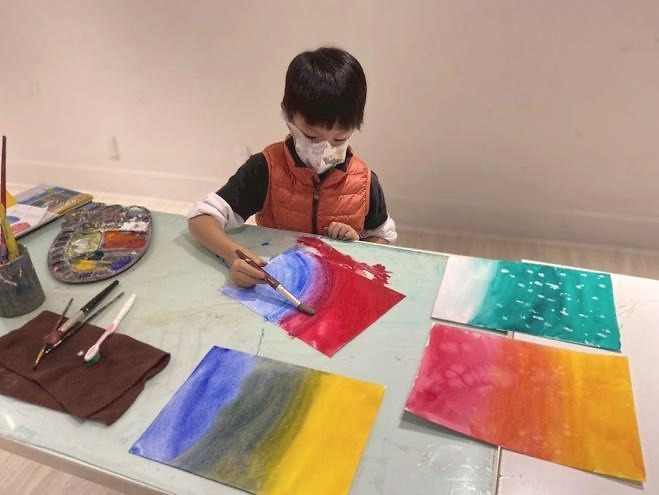
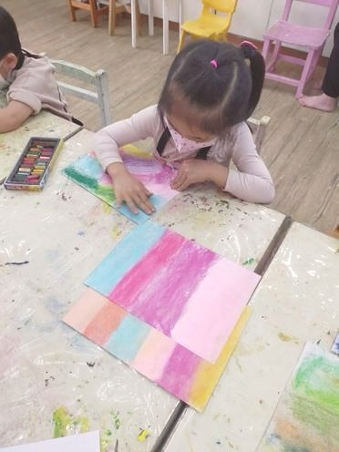

創作技法說明
提供大色塊壓克力、水彩筆、透明染料、色紙拼貼等媒材 , 並引導孩子 : 「如果開心是一種顏色 , 它會是什麼?」透過主題式引導 (害怕的房間 / 快樂的海洋 / 憤怒的機器人) 進行創作。
25. 情緒顏色轉譯法 ( Emotional Color Translation Method ) 顏色不只是視覺選擇 , 而是孩子情緒的表達出口。


提供大色塊壓克力、水彩筆、透明染料、色紙拼貼等媒材 , 並引導孩子 : 「如果開心是一種顏色 , 它會是什麼?」透過主題式引導 (害怕的房間 / 快樂的海洋 / 憤怒的機器人) 進行創作。
孩子在這個方法中，不只是使用材料或學習技巧，而是在嘗試中建立自己的判斷：我看見了什麼？我想怎麼改變？我可以用什麼方式表達？這些過程會慢慢累積成孩子面對世界的感受力、思考力與創造力。